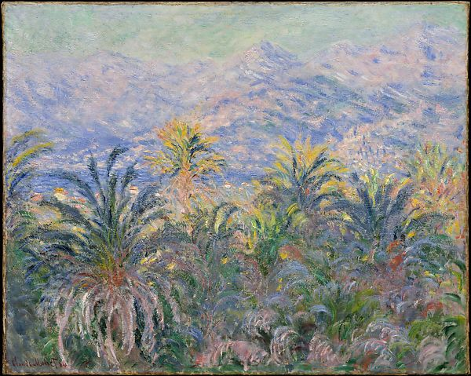

<head>
<meta charset="UTF-8" />
<meta name="keywords" content="drawing, painting" />
<meta name="description" content="drawings by Sunjy" />
<title>Sunjy</title>
<link rel="shortcut icon" type="image/x-icon" href="../../mImages/mCommon/favicon.ico" media="screen" />
<link rel="stylesheet" type="text/css" href="../../mCsses/mCommon/mCssA.css" />
<link rel="stylesheet" type="text/css" href="../../mCsses/mCommon/mCssB.css" />
<link rel="stylesheet" type="text/css" href="../../mCsses/mCommon/mCssC.css" />
<link rel="stylesheet" type="text/css" href="../../mCsses/mCommon/mCssD.css" />
<link rel="stylesheet" type="text/css" href="../../mCsses/mContent/mCssA.css" />
<link rel="stylesheet" type="text/css" href="../../mCsses/mContent/mCssB.css" />
<link rel="stylesheet" type="text/css" href="../../mCsses/mContent/mCssC.css" />
<link rel="stylesheet" type="text/css" href="../../mCsses/mContent/mCssD.css" />
</head>
<script type="text/javascript" src="../../mScripts/mContent/mContentAA.js" /></script>
<script type="text/javascript" src="../../mScripts/mContent/mContentAB.js" /></script>
<script type="text/javascript" src="../../mScripts/mContent/mContentAC.js" /></script>
<script type="text/javascript" src="../../mScripts/mContent/mContentAD.js" /></script>
<script type="text/javascript"></script> 
<script type="text/javascript">
document.write('<div class="mImgAbsolute"></div>');
/*
document.write('<p class="mFontSizeBColor" />From a white paper...</p>');
document.write('<table class="center"><tr><td>');
document.write('');
document.write('</td></tr></table>');
*/
</script>


<script type="text/javascript">
document.write('<p class="mFontSizeBColor" />Palm Trees at Bordighera</p>');
document.write('<p class="mFontSizeSColor" />By Claude Monet, 1884. Monet first visited Italy’s southern coast with Renoir in December 1883. Shortly thereafter, he returned alone to paint, writing his dealer that working &#34;à deux&#34; was constraining. This scene and <i>The Valley of the Nervia</i> reflect Monet’s excitement at the new motifs offered by the region’s palm trees and mountains. For this view, he ventured from his hotel in Bordighera and looked across the Bay of Ventimiglia toward the Alps on the French border. The dazzling colors challenged him to &#34;dare to use all the tones of pink and blue,&#34; although what he truly needed was a &#34;palette of diamonds and jewels.&#34;</p>');
document.write('<table class="center" /><tr><td>');
document.write('The Valley of the Nervia</i> reflect Monet’s excitement at the new motifs offered by the region’s palm trees and mountains. For this view, he ventured from his hotel in Bordighera and looked across the Bay of Ventimiglia toward the Alps on the French border. The dazzling colors challenged him to &#34;dare to use all the tones of pink and blue,&#34; although what he truly needed was a &#34;palette of diamonds and jewels.&#34;" />');
document.write('</td></tr></table>');
</script>


